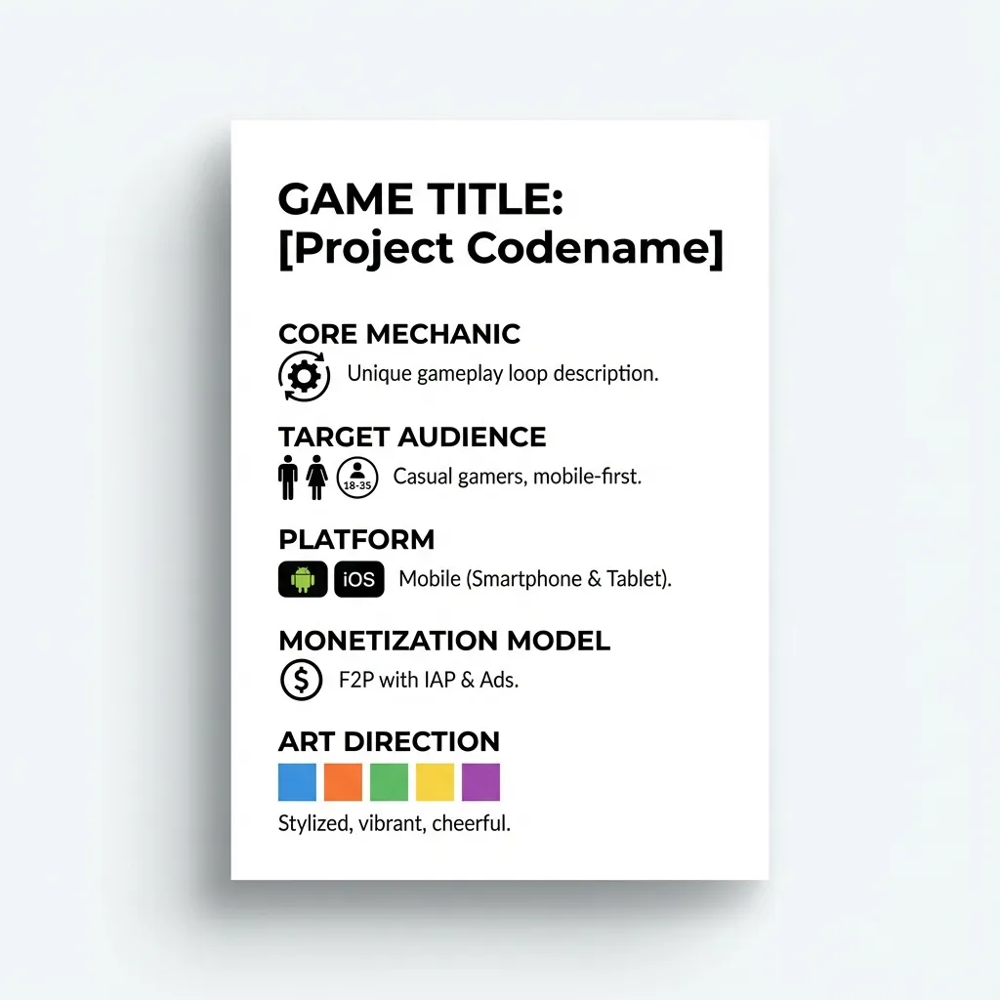
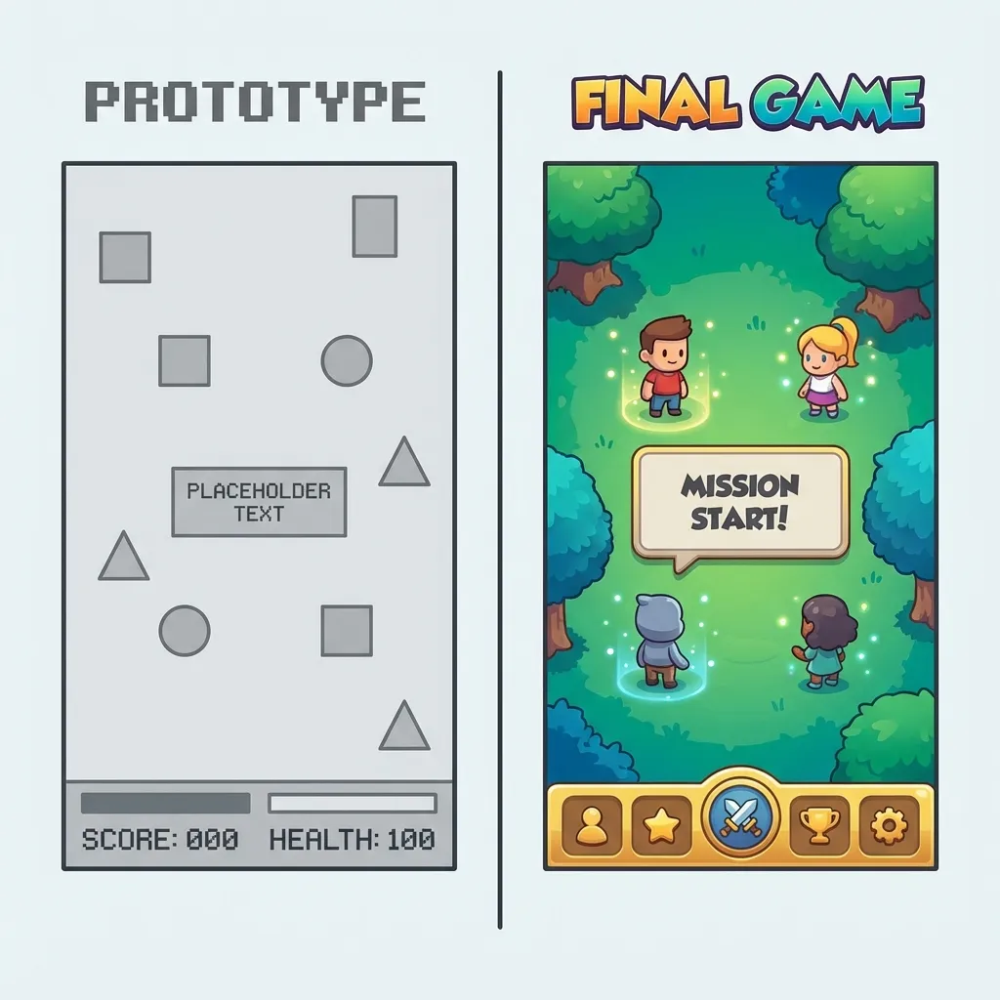
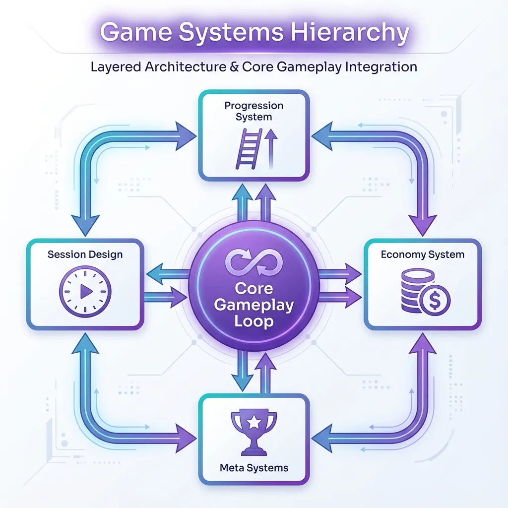
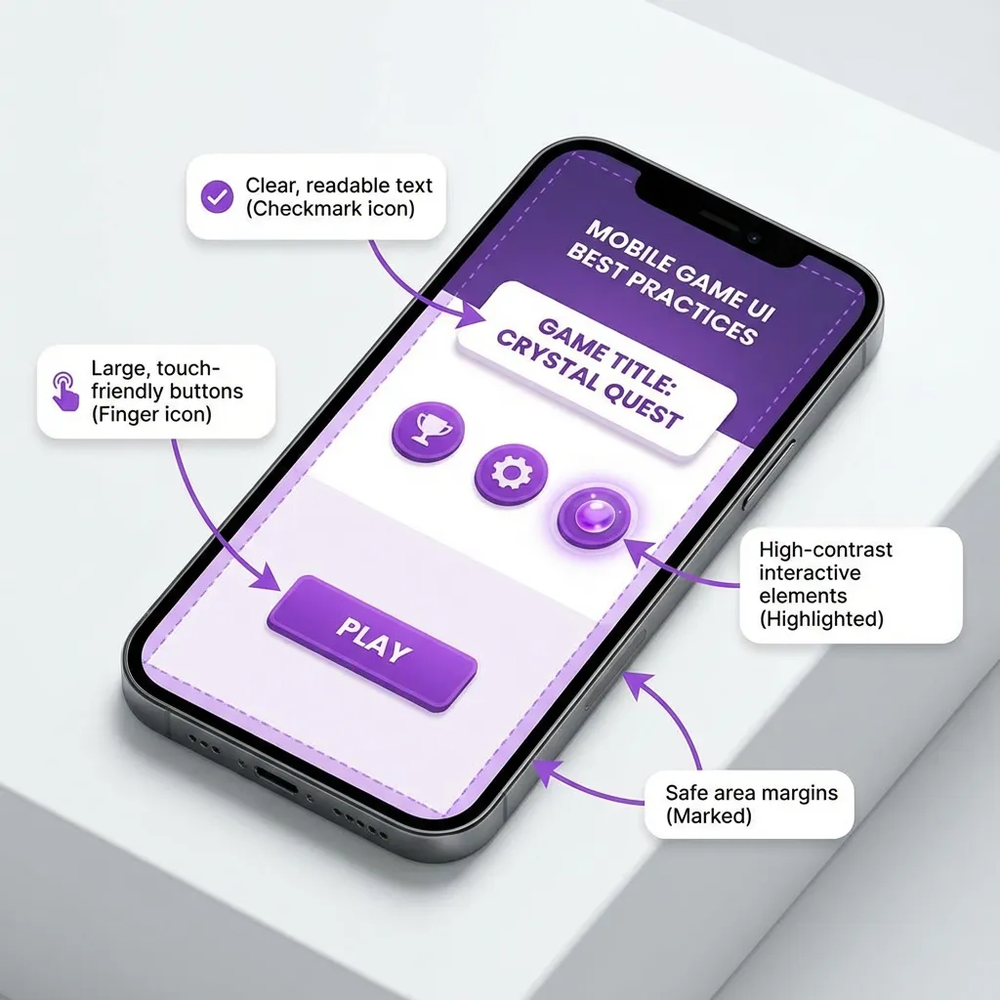
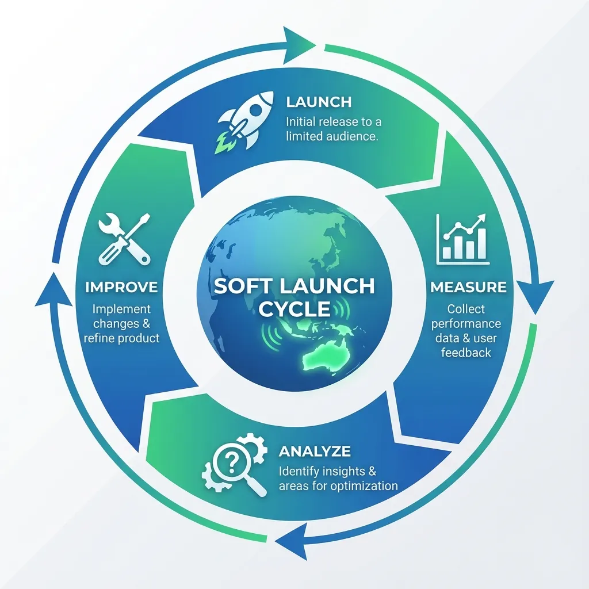
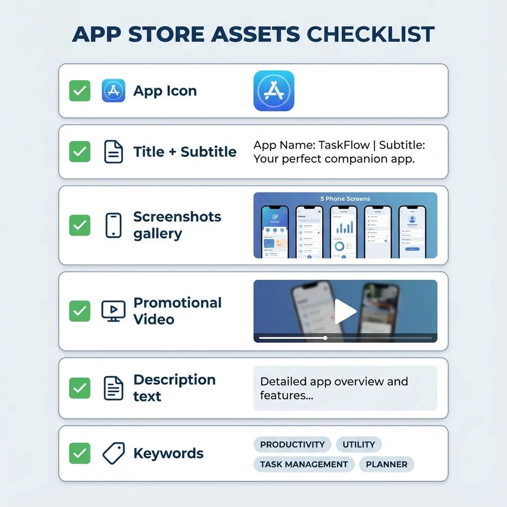
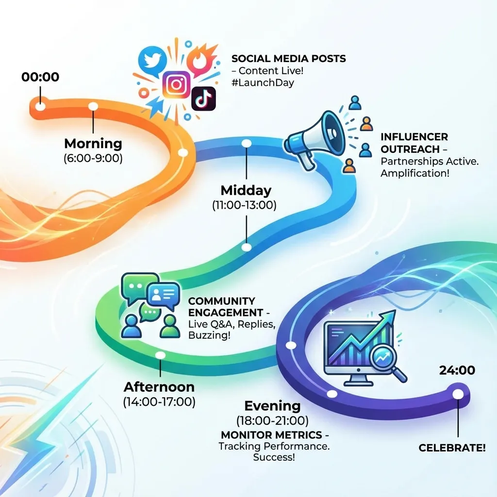

Mobile Game Development Roadmap 2026
ROADMAPLearn the complete roadmap to develop and launch a mobile game in 2026. From concept and prototyping to testing, publishing, and post-launch live ops for Android & iOS.
Step 1: Clarify Your Game Concept
Every successful mobile game starts with a clear, focused concept. A focused idea saves time, reduces rework, and makes your game easier to market.
- Define the core loop in one sentence: what does the player do repeatedly (e.g., “tap to avoid obstacles and beat your high score”)
- Identify your genre and audience: hyper-casual, arcade, puzzle, mid-core, kids, etc.
- List 1–2 unique hooks: art style, mechanic twist, theme, or progression system
Write a one-page Game Concept Document including: game summary, core mechanic, target platform, monetization model, and basic art direction.
Step 2: Prototype Fast and Validate Fun
Instead of building full features, focus first on proving that the game is fun. A prototype should be ugly but playable.
- Build a “grey box” version: basic shapes, placeholder art, simple UI
- Test only the core mechanic: (movement, tap timing, merge logic, etc.)
- Aim to prototype within 2–7 days: not weeks
Let friends, teammates, or small test groups play. Watch them silently: if they naturally replay, laugh, or say “one more try,” you’re on the right track. If they are confused or bored in the first 30 seconds, refine the mechanic before adding content.
Step 3: Design Systems and Content
Once the core loop works, design the systems around it so the game can scale and keep players engaged.
- Progression: levels, stages, difficulty curves, or endless score scaling
- Economy: coins, gems, energy, upgrade costs, and reward pacing
- Meta systems: missions, achievements, unlockable characters or skins
- Session design: how long an average session should last (e.g., 2–4 minutes for hyper-casual)
Use spreadsheets to balance numbers (reward amounts, upgrade costs, difficulty steps) before implementing them in the engine. Keep early content slightly easier and ramp difficulty with data-driven curves.
Step 4: Choose Tech and Build Properly
Select a toolchain that matches your experience and game type. For most indie mobile devs in 2026, that means a popular engine and standard tools.
- Engine: modern cross-platform engine for 2D/3D mobile (especially for hyper-casual and arcade)
- Platforms: plan for Android first, then iOS, unless you already have Apple devices and budget
- Source control: use Git or similar to avoid losing work and to collaborate safely
Structure your project cleanly:
- Separate gameplay logic, UI, and art assets
- Use prefabs or reusable components for enemies, obstacles, and FX
- Keep build sizes small: compress textures, reuse assets, and remove unused content
Step 5: Art, UI/UX, and Audio Polish
Good presentation makes a simple game feel premium. You don’t need ultra-realistic graphics, but you do need clarity and consistency.
- Art style: pick a small, consistent palette and stick to one style (flat, low-poly, cartoon, etc.)
- Readability: players must immediately see what they can interact with and what is just background
- UI: use large touch targets, simple icons, and minimal text; make menus work well on small screens
- Audio: add satisfying sound effects for core actions (jump, merge, collect, hit) and subtle background music
Test your game on multiple devices and screen sizes; adjust font sizes, button positions, and safe areas so everything works on small, cheap phones as well as modern ones.
Step 6: Integrate Analytics and Monetization
Add analytics before your soft launch so you can measure real player behavior instead of guessing.
Track at least:
- Install source and first session
- Level progression and where players quit
- Session length and number of sessions per user per day
- Retention: Day 1, Day 7, Day 30
Monetization basics:
- Hyper-casual / arcade: rewarded videos and interstitial ads at natural breaks
- Casual / mid-core: combine ads with in-app purchases like currency packs, remove-ads options, and cosmetic skins
Avoid aggressive placements: do not show full-screen ads during gameplay or too often in the first minutes. Analytics will show whether players are quitting because of difficulty spikes, boring early gameplay, or annoying monetization patterns.
Step 7: Soft Launch and Iteration
Before a global launch, soft launch in a few selected countries or regions to test performance.
During soft launch, focus on:
- Retention: if Day 1 is low, fix onboarding and first-session experience
- Difficulty: if many players drop on a specific level, adjust balancing
- Monetization: check ad engagement and IAP conversion without hurting retention
- Performance: crashes, loading times, and fps on low-end devices
Update quickly: release small, targeted updates every 1–2 weeks based on real data, not assumptions.
Step 8: Prepare Store Assets and ASO
Your store page is your main sales page. Even a great game will fail if the store listing is weak.
Prepare:
- Title + short subtitle with your main keywords
- Icon that clearly shows genre and style, with simple shapes and strong contrast
- 5–8 screenshots with text overlays that highlight features (“100+ levels”, “Offline play”, “Simple one-touch controls”)
- Short gameplay video that shows action in the first 3 seconds
Write a clear description: First 2 lines hook and main value, bullet list of core features, then social proof and call to action.
Step 9: Launch Strategy and Marketing
On launch, your goals are to spike downloads, get reviews, and feed the store algorithms enough data.
Tactics:
- Coordinate with friends, community, and social media to install and review on launch day
- Share short gameplay clips on TikTok, Instagram Reels, and YouTube Shorts
- Contact small gaming pages, bloggers, or micro-influencers; offer early access or promo codes
- If budget allows, run small test ad campaigns to see which creatives and audiences convert best
The first 1–2 weeks are critical: strong early performance can give you better ranking and recommendations.
Step 10: Live Ops and Long-Term Support
A launch is not the end; it’s the beginning of your live ops phase.
Continuous improvement:
- Add new levels, events, or modes regularly (e.g., every 2–4 weeks)
- Run time-limited events (festivals, seasonal themes, bonus weekends)
- Fix bugs quickly and answer reviews, especially negative ones, politely and clearly
Watch your metrics over time:
- If retention drops, refresh content and improve early gameplay
- If monetization is weak but retention is strong, refine ad placement and IAP offers
- If CPI (cost per install) is too high, test new creatives, new audiences, or focus more on organic ASO
About Vexillogic
As a Pakistan-based studio focused on hyper-casual and arcade games, this roadmap can be customized to show your real workflow. Vexil Logic Games follows this rigorous process to deliver high-quality gaming experiences like Cyber Grid, Neon Racer, and Fruit Merge. We blend data-driven decisions with creative passion to build games that resonate with players worldwide.